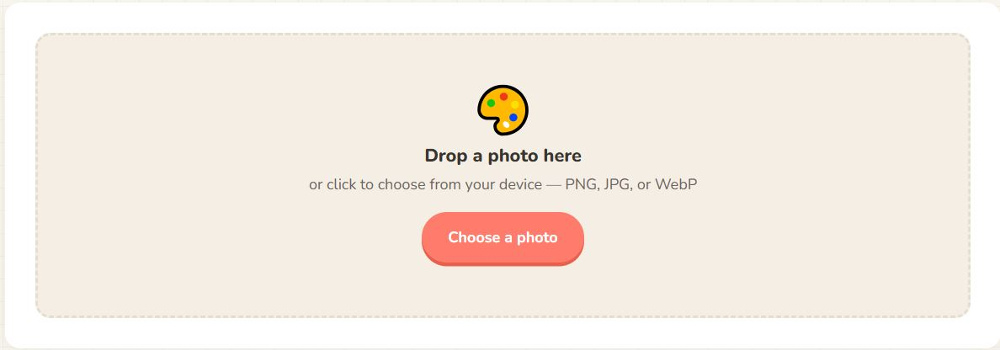
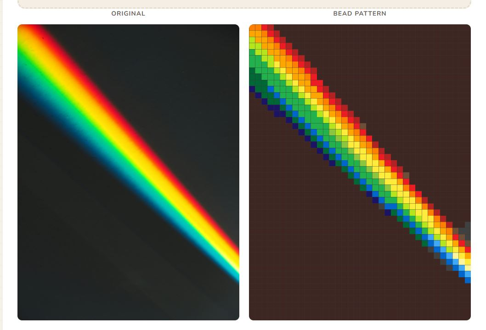
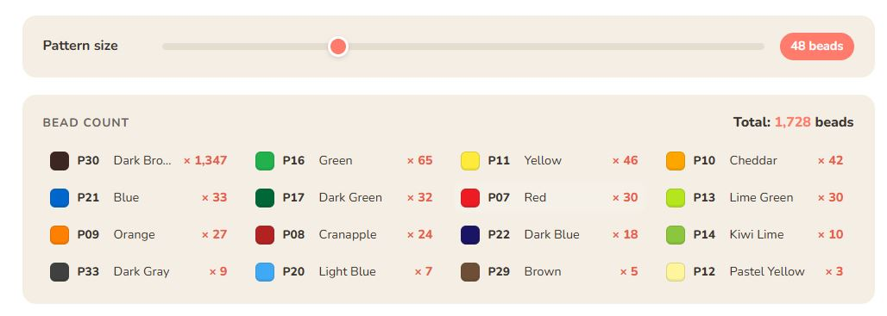

Why make bead patterns from photos?
There's something magical about watching a favorite photo turn into a grid of tiny colored squares — each one a real Perler bead you can place on a pegboard. It's part craft project, part puzzle, and when you fuse that last bead and hold up the finished piece? Pure satisfaction.
For families, turning photos into Perler bead patterns is one of the best rainy-day activities out there. Kids love seeing their own drawings, a picture of the family dog, or a favorite cartoon character transformed into something they can build with their hands. Parents love that it pulls everyone away from screens for an hour or two. And the finished piece isn't a throwaway — it's fridge-worthy art, a handmade gift for grandparents, or a decoration that actually means something.
The catch used to be that getting from "here's a photo" to "here's a bead pattern I can follow" meant either squinting at pixel art tutorials, buying expensive crafting software, or painstakingly counting pixels by hand. None of those are fun.
That's exactly why I built BeadSnap — a free Perler bead pattern maker that runs right in your browser. You upload a photo, slide a single control, and instantly get a color-matched bead pattern, complete with a shopping list that tells you exactly how many of each Perler color to buy. No signup, no downloads, and your images never leave your device.
In this guide, I'll walk you through the entire process, from picking the right photo to ironing your finished piece. Let's make something awesome.
What you need
Before we dive in, here's everything you'll need to make a Perler bead pattern from a photo:
- A photo — anything from your phone, camera roll, or desktop. I'll share tips below on which types of photos work best.
- BeadSnap — our free photo to Perler bead tool at beadsnap.app. No signup, no downloads — it works right in your browser.
- Perler-style fuse beads — the standard 5mm fuse beads you can find at craft stores or online. BeadSnap matches your photo to a practical bead palette for printable craft planning.
- Pegboards — the square plastic boards with little pegs that hold your beads in place. A standard board is 29×29 pegs. For larger patterns, you'll connect multiple boards together.
- Ironing paper — usually included with Perler bead kits. This goes between your iron and the beads when you fuse them.
- An iron — a regular household iron set to medium heat (no steam).
Got everything? Let's go step by step.
Step 1: Choose your photo
Not every photo makes a great bead pattern. Since you're working with a limited grid of beads (think 48×48 beads rather than millions of pixels), simple, high-contrast images tend to produce the best results. Here's what to look for:
Photos that work beautifully
- Close-up portraits — faces fill the frame, so you get plenty of detail where it counts. A head-and-shoulders shot of your child or pet is perfect.
- Bold, bright subjects — colorful flowers, cartoon characters, food, or anything with strong, distinct colors that will map cleanly to Perler beads.
- Simple backgrounds — a clear sky, a plain wall, or grass behind your subject keeps the focus where you want it. Busy backgrounds create visual noise at low resolutions.
- Kids' drawings — crayon or marker drawings on white paper are fantastic. They already have bold outlines and flat color areas that translate perfectly to beads.
Photos that are trickier
- Wide, busy landscapes — a sweeping mountain view has too much fine detail packed into a tiny grid. If you want to bead a landscape, crop in tight on one element.
- Dark, low-contrast images — a photo taken in dim lighting where everything is shades of dark gray won't give you much to work with. Brighten it up first, or pick another shot.
- Group photos — faces get tiny when you fit five people into one 48-bead grid. One or two subjects is the sweet spot.
Pro tip: If you're not sure whether a photo will work, just try it. BeadSnap updates the preview instantly, so you'll know within seconds whether the result looks good. There's zero cost to experimenting.
Step 2: Upload to BeadSnap
This is where the magic happens. Head over to beadsnap.app and you'll see the upload area front and center — a friendly dashed box that says "Drop a photo here."

The BeadSnap homepage — just drop your photo or click to choose one from your device.
You can either:
- Drag and drop a photo from your desktop or file explorer directly onto the upload area, or
- Click the upload box to open your device's file picker and choose a photo manually.
BeadSnap accepts PNG, JPG, and WebP files. Your photo is processed entirely inside your browser using the Canvas API — it never gets uploaded to any server. That means your images stay private, and the pattern generation happens instantly, no waiting for a server to respond.
If you don't have a photo handy, click one of the four example thumbnails below the upload area — there's a child portrait, a beach scene, an animal, and a cake — to see BeadSnap in action right away.
Once you upload (or select an example), the page instantly transforms. On the left, you'll see your original photo. On the right — your bead pattern, rendered as a pixel-perfect grid with every pixel matched to an approximate bead color.

Side-by-side preview: your original photo and the generated bead pattern, color-matched to the BeadSnap palette.
Step 3: Adjust the pattern size
Right below the preview, you'll find a simple slider labeled "Pattern size." This is the most important control on the page, so let me explain what it does in real-world terms.
The number you see — 32, 48, 64, or any value up to 128 — is the number of beads along the longer side of your image. A setting of 48 means your pattern will be 48 beads wide (for a landscape photo) or 48 beads tall (for a portrait), with the shorter side calculated automatically to preserve your photo's proportions.

The size slider lets you dial in exactly how detailed your pattern should be — from chunky and quick to intricate and detailed.
What the bead count means in real life
- 16–32 beads — Chunky and charming. Great for young kids, quick projects under an hour, or fridge-magnet-sized pieces. A 32-bead pattern is about 5.5 cm (2.2 inches) square. Low detail but very easy to follow.
- 48 beads — The sweet spot. Roughly 8 cm (3.1 inches) square. Enough detail to recognize faces and expressions, but not so many beads that the project takes days. A 48×48 pattern uses up to 2,304 beads and takes a family about 2–3 hours of relaxed beading.
- 64 beads — High detail. About 11 cm (4.3 inches) square. You'll be able to see individual features clearly — great for a special gift piece. Expect 4–6 hours of work spread across a couple afternoons.
- 96–128 beads — Intricate, display-worthy art. At 128 beads, you're looking at roughly 22 cm (8.7 inches) across and potentially 16,000+ beads. This is a serious project for experienced beaders. You'll need multiple connected pegboards and a lot of patience, but the result is stunning.
Try before you commit
Slide the control back and forth and watch the pattern update in real time. Find the sweet spot where the face (or subject) is recognizable but the total bead count doesn't feel overwhelming. Remember — every bead you see on screen is one you'll place by hand. For a first project, 48 beads is a great starting point.
Step 4: Read the shopping list
Below the pattern preview, you'll find one of BeadSnap's most useful features: the automatic bead shopping list. It shows you every Perler color that appears in your pattern, sorted from most-used to least-used, with exact bead counts.
The automatic shopping list shows every color you need, complete with Perler color codes, swatches, and exact counts.
Each row shows you:
- A color swatch — what the bead looks like
- The bead color code — e.g., P01 for White, P07 for Red, P34 for Black. These BeadSnap codes make the shopping list easier to read.
- The color name — "Cheddar," "Toothpaste," "Kiwi Lime," and so on
- The bead count — exactly how many beads of that color you need
Click the "Copy shopping list" button and BeadSnap copies a clean, formatted list to your clipboard — perfect for pasting into a note on your phone or printing out before you head to the craft store. You can also click "Download PDF" to get a single file with both the pattern image and the full shopping list, ready to print.
Always buy a few extra
Perler bead counts are cheap insurance. Buy about 10–15% more of each color than the list says — a few beads will inevitably roll under the couch or get lost in the carpet. The smaller the count, the more you should over-buy proportionally. If a color shows up 12 times, grab a pack of 50.
Step 5: Print and start beading
You have your pattern, you have your beads — now it's time to build.
Download and print
Click the "Download PNG" button to save your pattern as an image file, or "Download PDF" for a print-ready version that includes the shopping list. The PDF is especially handy — it puts the pattern on one page (or spreads it across pages for larger sizes) with the shopping list right there for reference.
Print it out, prop it up next to your pegboard, and use it as a reference as you place each bead. The pattern shows every bead with its color code printed directly in the cell (on larger grid sizes), so there's no guessing.
Setting up your workspace
- Good lighting matters. Bead colors that look distinct in daylight can blur together under dim yellow bulbs. A desk lamp with a daylight bulb makes a big difference, especially when you're working with dark blues, purples, or browns.
- Sort your beads first. Before you place a single bead, open your packs and sort them by color into small bowls, a muffin tin, or a compartmented bead box. Working from sorted beads is easily twice as fast as digging through a mixed pile.
- Work one color at a time. Instead of going row by row, try filling in all the beads of one color, then moving to the next. It's faster and reduces mistakes — your eye gets tuned to that specific shade.
- Use tweezers. Perler beads are tiny (5mm). A pair of craft tweezers or even clean eyebrow tweezers makes placing them on the pegboard much less fiddly, especially for kids with smaller hands.
Fusing (ironing) your piece
Once every bead is in place on the pegboard, place the ironing paper over the beads. Set your iron to medium heat (the "cotton" setting usually works) with no steam. Press the iron gently over the paper in slow, circular motions for about 10–20 seconds. You'll start to see the beads fusing together through the paper — the holes in the center of each bead will shrink slightly.
Let it cool completely under a heavy book to keep it flat (beads curl as they cool if left uncovered). Then carefully peel off the paper, lift the piece from the pegboard, flip it over, and repeat the ironing on the back side for extra strength.
That's it — you just made a Perler bead pattern from your own photo.
Tips for beginners
- Start small. Pick a 32 or 48 bead pattern for your first project. Completing something in one afternoon builds confidence. Jumping straight to a 128-bead epic can be discouraging if you've never placed a bead before.
- Pick a photo with personal meaning. A pattern of your dog or your kid's favorite cartoon character will keep you motivated way more than a generic flower. You're going to be staring at this thing for hours — make it matter.
- Involve the kids in the whole process. Let them pick the photo, watch the pattern generate on screen, help count beads from the shopping list at the store, and (of course) place beads themselves. The ownership makes the finished piece feel like a shared accomplishment.
- Don't stress about perfection. If you run out of a color halfway through, substitute the next closest one. BeadSnap's color matching is smart, but the finished piece is handmade — small variations are part of the charm.
- Save your pattern file. Download the PNG before you close the browser tab. You might want to make the same design again (as a gift for another family member, for instance), and re-uploading the original photo won't give you the exact same result if you used a different size setting.
- Frame it or magnet it. Fused bead pieces look great in a simple shadow box frame, or with a peel-and-stick magnet sheet on the back. They make wonderful handmade gifts.
Frequently asked questions
Is BeadSnap really free?
Yes — completely free, no catch. There's no signup, no subscription, and no paywall. The site is supported by ads, but the core tool works without any payment or account. I built it because my family wanted it, and I figured other families would too.
Do my photos get uploaded somewhere?
No. Everything runs locally in your browser using JavaScript and the HTML Canvas API. Your images never leave your device — they aren't stored, transmitted, or processed on any server. You can even test this by turning off your internet after the page loads; the tool works completely offline.
What size Perler beads does BeadSnap work with?
BeadSnap is designed for standard 5mm fuse beads, including common pegboard projects made with Perler-style beads. The color palette is an approximate BeadSnap working palette; see the Perler bead color chart for names, hex codes, and color planning notes.
Can I use BeadSnap on my phone?
Absolutely. BeadSnap is fully responsive and works on phones and tablets, not just desktops. You can snap a photo with your phone camera and upload it directly to create a pattern — no need to transfer files to a computer.
Can I make really large patterns?
The size slider goes up to 128 beads per side. At that size, you'll need multiple pegboards connected together (Perler sells connector pieces, or you can tape boards together). Very large patterns are advanced projects that take days or weeks, but the results can be stunning.
What if my colors don't match the pattern exactly?
Perler's color names and codes are standardized, so if you buy by the code (e.g., P07 for Red), the colors will match. If a color is out of stock, BeadSnap's palette is designed to suggest the perceptually closest match — the substitution will look close, especially at bead scale.
Ready to make your first pattern?
Turning your favorite photos into Perler bead art is one of those rare activities that checks every box: creative, screen-free, works for all ages, and produces something you'll actually want to keep. Whether you're making a Father's Day gift, decorating a kid's room, or just looking for a cozy afternoon project, making bead patterns from photos is as rewarding as the finished piece.
BeadSnap was built to make the hardest part — turning a photo into a buildable pattern — as easy as dragging and dropping. The rest is just you, your family, and a pile of colorful beads around the kitchen table.
Get 10 free beginner bead patterns
Printable PDF patterns for easy family craft projects. No spam, just cute bead ideas.
✅ Thanks! Your free patterns are on the way.
Your download should start automatically. If not, click here to open the PDF.
No signup. No download. 100% free.
Start making your bead pattern now →